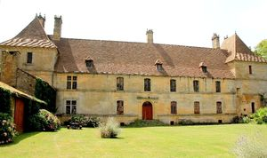
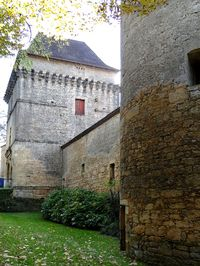
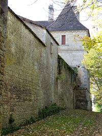
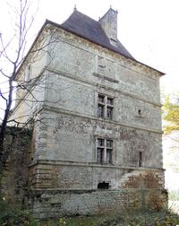
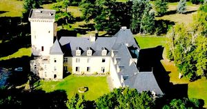
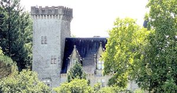
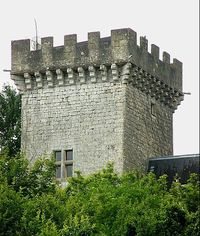
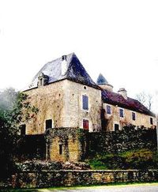
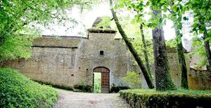

Recensement Jean-Claude Truffet









| Département | 24 — Dordogne |
| Canton | Villefranche du Périgord |
| Commune | Besse |
| Type d'édifice | Château |
| Période d'origine | XVI |
| Coordonnées GPS | 44° 40' 03" Nord, 1° 06' 38" Est. Château de Prats grav 5 à 9. |
BESSE, la construction date de la fin du XVIe au début du XVIIIe siècle. pour Gabriel de Gauléjac, seigneur de Puycalvel et de Besse, chevalier de l'ordre du roi, avant 1560 d'après Jean Secret. Gabriel de Gauléjac avait épousé Gabrielle de Vabres, fille de Michel de Vabres, pour lequel Dominique Bachelier avait reconstruit le château de Castelnau-d'Estrétefonds. Gabriel de Gauléjac a pu racheté la seigneurie de Besse qui avait été aliénée quelques années plus tôt grâce à la dot et une avance sur la succession. En 1571, un contrat est passé au château neuf de Besse, ce qui laisse à penser qu'il est alors habité par le seigneur du lieu. En 1580 et 1587, des garnisons à la solde du seigneur occupent les travaux. Gabriel de Gauléjac décèdera en 1588. Son fils, Jean-Marc se mariera avec Marie de Gironde. Il reçoit, en 1600, une dot qui lui permetta de reprendre les travaux de rénovation du château de Besse. A été inscrit aux M.H. en 2012. a six kilomètres au sud à Villefranche en Pérrigord château de FOURNELS, de la famille Michot « LE FOURNEL » de lépoque renaissance. A deux kilomètres au nord à Prats du Périgord le château PRATS du PERIGORD avec sa tour du XIVe siècle. Dès 1790, la commune de Prats-d'Orliac (devenue Prats-du-Périgord en 1900) a été rattachée au canton d'Orliac qui dépendait du district de Belvès jusqu'en 1795, date de suppression des districts. Lorsque ce canton est supprimé par la loi du 8 pluviôse an IX (28 janvier 1801) portant sur la « réduction du nombre de justices de paix », la commune est rattachée au canton de Villefranche-de-Belvès (devenu canton de Villefranche-du-Périgord en 1893) dépendant de l'arrondissement de Sarlat (devenu l'arrondissement de Sarlat-la-Canéda en 1965).
BESSE a été construit sur une terrasse dominant le bourg et sa belle église. Un quadrilatère de remparts défend l'ensemble; on pénètre dans la cour intérieure par un important châtelet du temps de Louis XIII, autrefois précédé d'un pont-levis. Ce châtelet, à deux étages, est couronné de mâchicoulis. Il porte aux angles des bossages vermiculés; baies à meneaux et sa porte est d'un bon style, avec pilastres et fronton. La courtine du châtelet s'encadre entre des tours circulaires. Quant au château lui-même, c'est un vaste et haut logis du grand siècle, encadré de pavillons ; ensemble sévère, mais non sans grandeur, grace à la noblesse des proportions et aussi à la qualité de l'appareil, des bossage d'angle, des cheminées ornées d'épis et du perron accédant au portail plein cintre entre pilastres. L'intérieur recèle de belles voûtes à pénétration. Gabriel de Gauléjac bâtit la demeure en 1560; endommagée par les guerres de religion, le château fut restaurée sous Louis XV par les Clermont-Touchebuf. Les seigneurs et le château de Besse ont façonné et rythmé lhistoire du village jusquau XVIIIe siècle. Le pavillon d'entrée et les tours rondes sont entrepris avant 1616, par le maçon Jean de Saint-Avit. Le fort de PRATS donjon carré à mâchicxoulis crénelé accolé à un bâtiment à deux niveaux toit à deux pans avec une tourelle carrée toit à quatre pans, l'édifice posséde en prolongement des dépendances de un niveau avec une tour ronde à l'extrémitée.
Famille de Gabriel de Gauléjac Fournels Famille Michot
"
A Besse grav 1 à 4 Coordonnées par GPS : 44° 40' 03" Nord, 1° 06' 38" Est. Château de Prats grav 5 à 9.